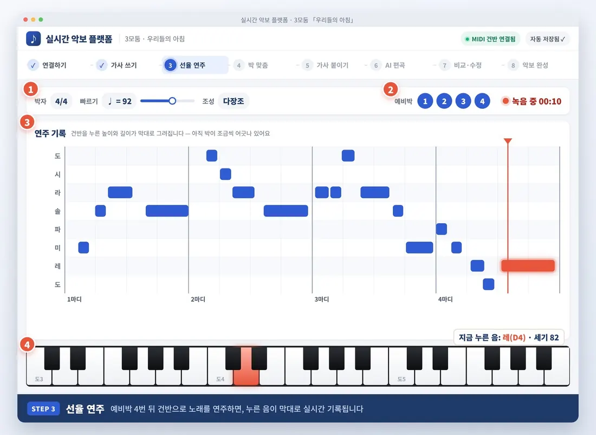
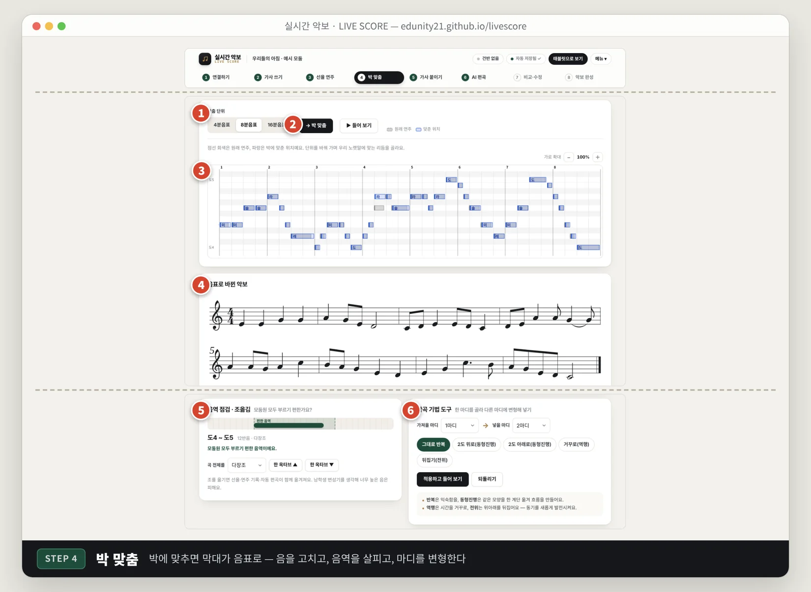

STEP 1
연결하기
MIDI 건반을 노트북에 꽂고, 모둠의 새 창작곡을 만든다.

이렇게 해요
- 선생님이 연결한 노트북에서 MIDI 건반 연결됨이 보이는지 확인해요.
- 모둠 역할 다섯 개를 정하고 곡 제목을 써요.
- 내 태블릿으로 QR을 찍어 우리 모둠 악보에 들어가요.
Student's Guide · 학생용
건반으로 친 선율이 그 자리에서 악보가 돼요. AI가 반주를 붙여 주지만, 무엇을 남기고 무엇을 고칠지는 우리 모둠이 정해요.
Listen
AI 버전도, 내 버전도 끝까지 들어 본 뒤에 정해요.
Why
고를 때마다 이유 한 줄. 그게 우리 모둠의 기록이에요.
Respect
건반은 차례로, 의견은 끝까지 듣고 말해요.
AI가 만든 것을 그대로 내지 않아요. 우리가 듣고, 비교하고, 고친 흔적이 있어야 우리 노래예요.
다섯 명이 한 가지씩 맡아요. 차시마다 역할을 바꿔도 좋아요.
노랫말을 쓰고(2단계), 음표 아래 글자를 맞춰요(5단계).
건반으로 선율을 치고(3단계), 박 맞춤 단위를 골라요(4단계).
장르·분위기·악기를 고르고(6단계), 비교·수정을 이끌어요(7단계).
고친 이유 한 줄을 입력하고 수정 기록을 챙겨요(7단계).
처음 버전과 새 버전을 들려주고 고친 이유를 소개해요(8단계).
단계마다 ‘확인!’을 눌러 표시해요. 이 태블릿에만 저장돼요.
MIDI 건반을 노트북에 꽂고, 모둠의 새 창작곡을 만든다.
이렇게 해요
노랫말을 쓰면 글자가 음절로 나뉘고, 한 줄이 두 마디로 배치된다.

이렇게 해요
예비박 네 번 뒤 건반으로 노래를 연주하면, 누른 음이 막대로 실시간 기록된다.

이렇게 해요
고르지 않은 연주를 박에 맞추면 막대가 진짜 음표로 바뀐다.

이렇게 해요
음표 아래에 가사가 한 글자씩 붙고, 어긋난 글자는 끌어서 바로잡는다.

이렇게 해요
원하는 느낌과 밴드 악기를 고르면 AI가 편곡하고, 파트별로 나누어 음표로 바꿔 준다.

이렇게 해요
AI 버전과 내 선율을 겹쳐 보고, 고를지 고칠지 직접 정한 뒤 이유를 남긴다.

이렇게 해요
노래와 밴드 파트가 함께 적힌 총보가 완성되고, 파일로 내보내거나 다시 만들 수 있다.

이렇게 해요
7단계에서 고를 때마다 이유를 한 줄로 써요. 이렇게 세 조각을 이어 쓰면 쉬워요.
어디서+무엇이+어떻게 들려서 / 들리게 하려고
막히면 · 아래 낱말 은행에서 한 단어를 골라 넣어 보세요.
음악을 설명할 때 쓰는 말이에요.
| 이럴 때 | 이렇게 해요 |
|---|---|
| QR로 안 들어가져요 | 와이파이 연결을 확인하고 카메라로 다시 찍어요. 그래도 안 되면 손을 들어요. |
| 건반을 눌러도 막대가 안 생겨요 | 화면 위 MIDI 건반 연결됨이 있는지 보고, 없으면 선생님께 알려요. |
| 가사 줄이 빨간색이에요 | 글자 수와 음표 수가 달라요. 한 음에 두 글자 또는 두 음에 늘이기를 써요. |
| 실수로 잘못 옮겼어요 | 되돌리기를 눌러요. |
| 모둠 의견이 갈려요 | 두 쪽을 다 들어 보고, 각자 이유를 한 줄씩 말한 뒤 정해요. |